Objekte
Funktion der Objekte
Objekte sind das zentrale Ordnungselement in xmera Omnia. Eine ihrer Hauptaufgabe ist die Bereitstellung des Assetsregisters im Rahmen des Informationssicherheitsmanagementsystems (ISMS).
Objekte zeichnen sich durch folgende Eigenschaften aus:
-
Objekte können hierarchisch strukturiert werden,
-
Objekten können Mitglieder mit Rollen zugeordnet werden,
-
Objekte können Funktionsmodule bereitstellen,
-
Objekte gehören einer Objektklasse an,
-
Objekte können mit anderen Objekten logisch verknüpft werden.
Die Übersicht der Objekte wird im Topmenü über den Menüpunkt Objekte aufgerufen. Jeder Anwender sieht die öffentlichen Objekte und die Objekte, in denen er eine Rolle zugewiesen bekommen hat.
Objektübersicht
Die Objektdaten werden in der Objektübersicht dargestellt (siehe Kasten 3 im nachfolgenden Bild):
➊ Objektbezeichung (Hierarchiepfad und Objektname)
➋ Objektbeschreibung
➌ Spezifische Objektdaten (Eigene Felder)
➍ Aufgaben
➎ Mitglieder des Objekts mit ihren Rollen
➏ Unterobjekte (Hierarchie)
➐ Verknüpfte Objekte (logische Zusammenhänge)
Objekthierarchie
Die Objekthierarchie bietet die Möglichkeit Arbeitsbereiche, Verantwortlichkeiten/Organisationen als auch Sicherheitszonen/Cluster strukturiert darzustellen. Die hierarchische Struktur wird durch die Festlegung des übergeordneten Objekts bei der Erstellung/Konfiguration des Objekts definiert. So entsteht ein Objektbaum, der sich in der Listenanzeige der Objektübersicht darstellen läßt.
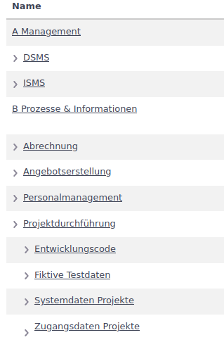
In der Objektübersicht wird die Struktur in der Objektbezeichung, wie im nachfolgenden Bild an Pkt. ➊ zu sehen, mit den Links zu den übergeordneten Objekten dargestellt.
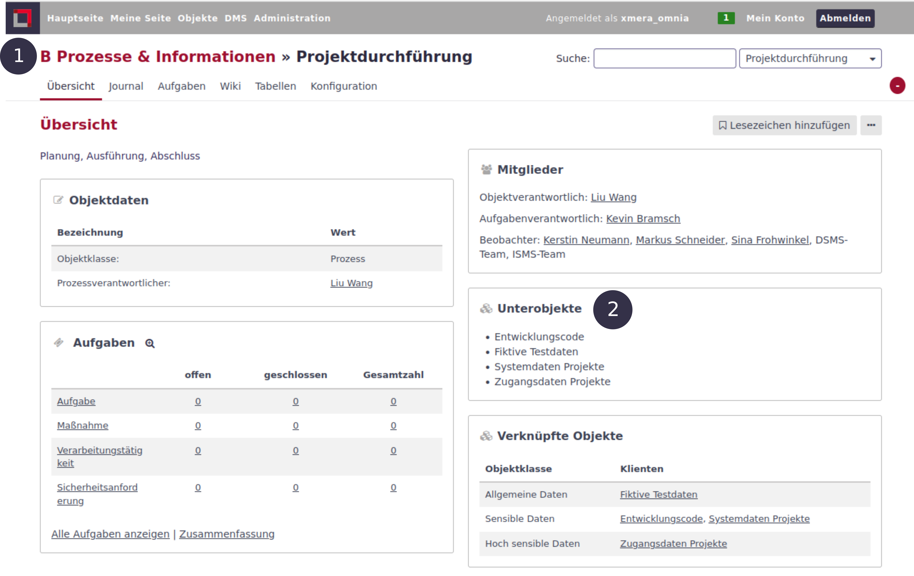
In dem Bereich Unterobjekte ➋ sind die dem Objekt unterlagerten Objekte zu sehen und verlinkt.
Objektverknüpfungen
Neben der hierarchischen Verknüpfung der Objekte bietet xmera Omnia noch die logische Objektverknüpfung. Die Verknüpfung dient der Abbildung von Beziehungsstrukturen. Diese werden im Rahmen der Schutzbedarfsfeststellung für die automatische Vererbung benötigt. Daher bilden die Verknüpfungen eines Objekts die logischen Verbindungen zu Diensten anderer Objekte ab.
Beispiele für solche Verknüpfungen sind
-
Prozess nutzt Anwendung,
-
Client nutzt Server oder
-
Server steht im Serverraum.
Die Festlegung der Objektverknüpfung erfolgt in der Objektkonfiguration.
Objektmitglieder
Die Verwaltung von Mitgliedern und deren Rollen ist nicht zentral für die Anwendung definiert, sondern erfolgt in jedem Objekt einzeln.
Zentral verwaltet werden
-
die Benutzer des Systems, also diejenigen, die Mitglieder von Objekten werden können,
-
die Gruppen und die Zuordnung der Benutzer zu den Gruppen, als auch
-
die Rollen und Rechte, die in der Anwendung genutzt werden können.
Jedem Mitglied bzw. jeder Gruppe von Benutzern ist mindestens eine Rolle zugewiesen. Damit sind die Rechte jedes Mitglieds eindeutig definiert.
Eine Sonderrolle spielen öffentliche Objekte. Wird ein Objekt als öffentlich parametriert, so können auch Nichtmitglieder und anonyme Benutzer (nicht angemeldet) Rechte im Objekt erhalten. Diese Rechte sind in den Rollen Nichtmitglied und Anonym definiert.
Objekte erstellen
Objekte manuell erstellen
Objekte können aus der Objektseite (siehe Bild)
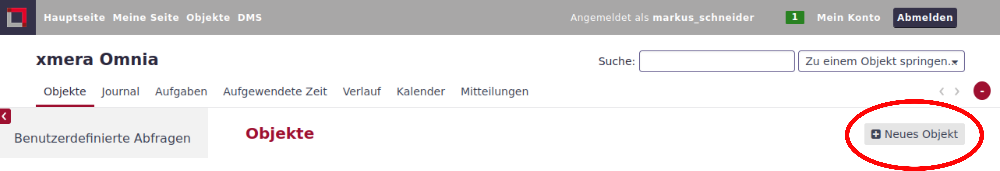
als auch, wie im folgenden Bild zu sehen, aus jeder Objektübersichtsseite als Unterobjekt angelegt werden.
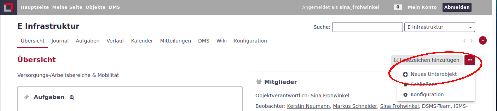
| Wird die Auswahl Neues Objekt oder Neues Unterobjekt nicht angezeigt, so fehlt dem Anwender das entsprechende Recht. |
Es wird dann die Konfigurationsmaske des neuen Objekts geöffnet. Die wichtigsten Punkte werden in den folgenden Unterkapiteln beschrieben.
| Die mit * gekennzeichneten Felder sind Pflichtfelder und müssen ausgefüllt werden. |
Objekte importieren
Über eine CSV-Schnittstelle können Objekte in großer Zahl in xmera Omnia eingebracht werden. Voraussetzung dafür ist, dass entsprechend vorkonfigurierte Objektklassen bestehen.
Der Objektimport erfolgt in 5 Schritten:
- Importdatei vorbereiten
-
Eine für den Import von Objekten geeignete Importdatei muss folgende Daten beinhalten:
Spaltenbezeichnung Datentyp Beschreibung Beispiel Name
String
Name des zu erzeugenden Objekts. (Pflichtfeld)
Softwareentwicklung
Beschreibung
String
Beschreibung des zu erzeugenden Objekts. (Optional)
Entwicklung von Standardsoftware zur Produktionssteuerung
Kennung
String
Kennung des zu erzeugenden Objekts: Länge zwischen 1 und 100 Zeichen. Kleinbuchstaben (a-z), Ziffern, Binde- und Unterstriche erlaubt. (Pflichtfeld)
softwareentwicklung
Öffentlich
Boolean
Soll das Objekt für alle Systembenutzer ohne Mitgliedschaft zugänglich sein? (Standard: false)
false
Unterobjekt von
String
Kennung des gewünschten Elternobjektes. (Pflichtfeld)
prozess-informationen
Benutzer erben
Boolean
Das zu erzeugende Objekt bekommt die selben Benutzer wie das Elternobjekt. (Optional)
false
Objektklasse
String
Kennung der Objektklasse, von der das zu erzeugende Objekt abgeleitet werden soll. (Pflichtfeld)
okm-prozess
[Objekt-Eigenes-Feld]
[Feldtyp]
[Objekt-Eigenes-Feld] = Name des eigenen Felds, das in der Objektlasse des erzeugenden Objekts definiert ist. [Feldtyp] hängt vom eigenen Feld ab und bestimmt den Wert. (Optional)
Für ein Beispiel siehe Bild Feldzuordnung.
- Importdatei hochladen
-
Der Einstiegspunkt für den Import von Objekten ist über das Topmenü durch Klick auf den Menüpunkt Objekte erreichbar. Wenn auf der Objektseite das 3-Punkte-Menü aufgeklappt wird, erscheint der Menüpunkt Importieren.
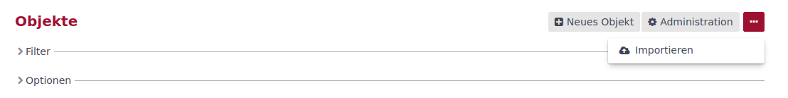
Das Hochladen kann per Auswahl über den Dateimanager oder per Drag & Drop erfolgen.
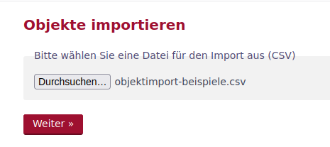
Dann auf Weiter klicken, um zu den CSV-Optionen zu kommen.
- CSV Optionen definieren
-
Die konkrete Wahl der CSV Optionen hängt davon ab, wie die CSV-Datei erstellt wurde. Für die Kodierung ist im Normalfall UTF-8 die beste Wahl.
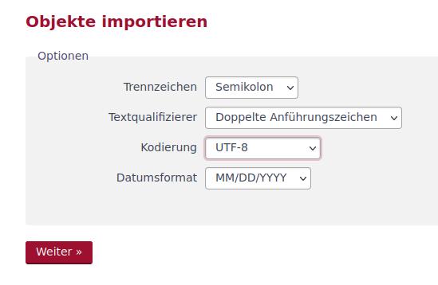
Dann auf Weiter klicken, um die Datenfelder zuordnen zu können.
- Datenfelder zuordnen
-
Wenn die Importdatei gut vorbereitet wurde, konnten alle Datenfelder automatisch zugeordnet werden. Andernfalls, muss eine manuelle Zuordnung durchgeführt werden.
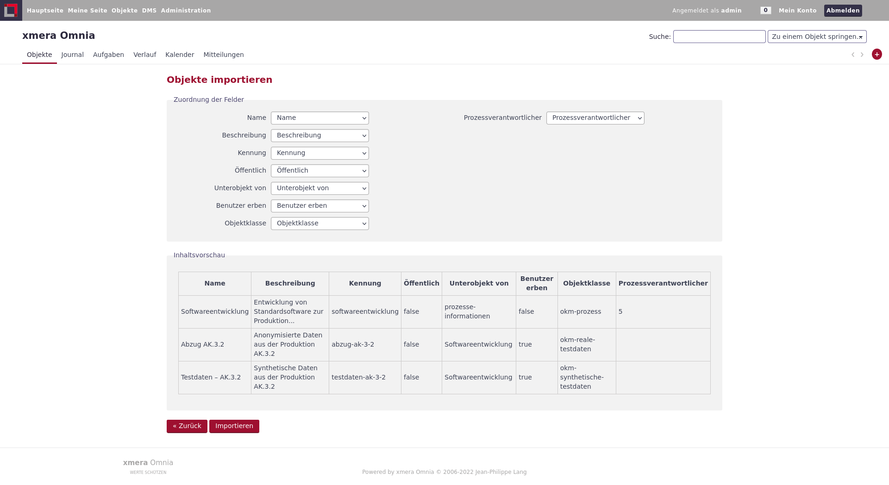
Dann auf Importieren klicken, um den Import zu starten
- Import durchführen
-
Während des Imports kann anhand des Zählers der Importfortschritt beobachtet werden. Wenn der Import erfolgreich verlief, wird eine Liste der neuen Objekte angezeigt.
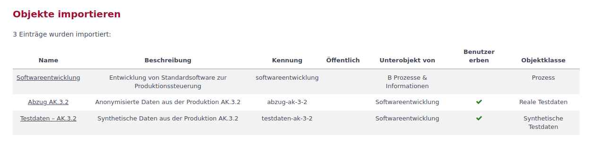
Andernfalls erhält der Benutzer entsprechende Fehlermeldungen wie beispielhaft unten im Bild zu sehen ist.
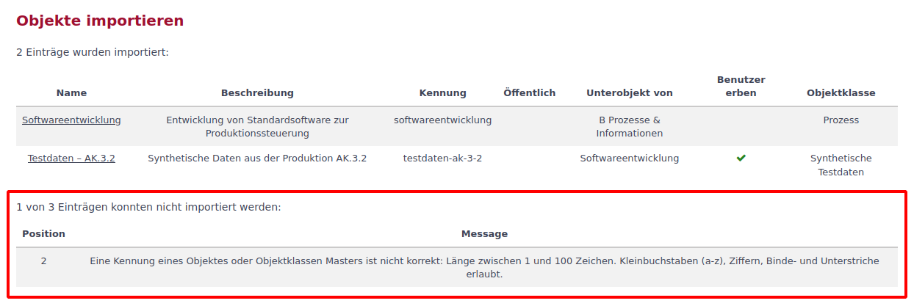
| Der Importprozess wird nicht abgebrochen, wenn eine Zeile der CSV-Datei nicht fehlerfrei in ein Objekt überführt werden kann. Die nicht importierten Zeilen werden in Form ihrer Positionsnummer in der Fehlermeldung angezeigt und müssen separat in einem zweiten Versuch importiert werden. |
Objekte konfigurieren
Objektklassen
Objektklassen beschreiben einen typischen Aufbau eines Objekts. Dieser Aufbau wird im Objektklassen Master durch den Administrator gepflegt. Anpassbar sind beispielsweise
-
Metadaten zu einem Objekt/Asset,
-
Schutzbedarfsfeststellungen für Prozesse oder Informationsobjekte,
-
Sicherheitsanforderungen,
-
Gefährdungen,
-
Standardaufgaben,
-
Wiederkehrende Aufgaben,
-
Wiki-Inhalte
-
Tabellen wie bspw. Gerätelisten, Raumlisten, usw.
-
diverse Aufgabenformulare,
-
Kalender und Gantt-Diagramm,
-
usw.
| Objektklassen werden zusätzlich als Parameter in einigen Objektmodulen und globalen Systemeinstellungen benötigt. Beispiele hierfür sind das Modul Aufgaben, Aufgaben-Synchronisation und das Modul Tabellen. |
Die Vorkonfiguration wird nach dem ersten Speichern beim Anlegen eines neuen Objekts an dieses übertragen. Die Vorkonfiguration von Objektklassen erfolgt aus der Administration der Anwendung.
Wird ein Objekt von einer Objektklasse abgeleitet müssen lediglich die Pflichtfelder, Unterobjekt von und Benutzer erben ausgefüllt werden. Wird ein Objekt nicht von einer Objektklasse abgeleitet, erfolgt die Objektkonfiguration manuell.
| Objekte, die Asstes darstellen, müssen von einer Objektklasse abgeleitet werden, da die Schutzbedarfvererbung auf das Konzept der Objektklassen angewiesen ist! |
Objektname
Der Objektname sollte ein Objekt möglichst gut beschreiben. Der Name kann nachträglich noch geändert werden.
Objektkennung
Beim Schreiben des Namens wird bei der ersten Einrichtung des Objekts automatisch die Kennung erstellt. Diese kann vor dem ersten Speichern geändert werden. Die Kennung
-
muss eindeutig sein,
-
darf keine Sonderzeichen und Umlaute enthalten und
-
muss ausschließlich aus Kleinbuchstaben, optional mit Ganzzahlen kombiniert, bestehen.
| Wurde das Objekt gespeichert, kann die Kennung nicht mehr verändert werden! |
Objektbeschreibung
Die Objektbeschreibung ermöglicht es, einen längeren, das Objekt beschreibenden Text, Grafiken, Links u.ä. dem Objekt mitzugeben. Die Objektbeschreibung wird in der Objektübersicht unterhalb der Objektbezeichung dargestellt.
Zur Erstellung der Beschreibung steht dem Anwender die Wiki-Toolbar zur Verfügung.
| Mögliche Textauszeichnungssprachen sind Markdown und Textile. Welcher Editor verwendet werden soll, muss im Administrationsbereich festgelegt werden. Dabei kann auch gänzlich auf eine Textauszeichnung verzichtet werden. |
Objekt-Homepage
Das Feld Objekt-Homepage bietet eine Möglichkeit einen externen Link auf einer Objektseite zu erfassen. Der Link wird oberhalb der Objektdaten auf der Übersichtsseite dargestellt.
Öffentlich
Mit setzen des Feldes wird das Objekt öffentlich. Alle Nutzer, die Zugang zu xmera Omnia haben, können Informationen des Objekts sehen. Ein nicht angemeldeter Nutzer ist automatisch mit den Rechten der Rolle Anonym ausgestattet. Jeder angemeldete Benutzer erhält automatisch die Rollenrechte der Rolle Nichtmitglied.
| Der Administrator kann in der Konfiguration vorgeben, dass eine Anmeldung zwingend notwendig ist. Damit wird verhindert, dass nicht autorisierte Nutzer mit dem System arbeiten können. |
Unterobjekt von
Durch die Zuordnung des Objekts zu einem überlagerten Objekt wird der Hierarchiebaum erstellt. Wird ein Unterobjekt erstellt, ist dieses Feld bereits vorbelegt, kann aber geändert werden.
Benutzer erben
Mit Setzen des Feldes werden die Mitglieder mit ihren Rollen aus dem übergeordneten Objekt übernommen.
Objektdaten
xmera Omnia bietet die Möglichkeit Objekten Eigene Felder zuzufügen. Die eigenen Felder werden durch den Administrator bereitgestellt und in der Konfigurationsmaske des Objekts gepflegt. Die Darstellung erfolgt in der Tabelle der spezifischen Objektdaten.
Objektverknüpfungen
Die Verknüpfungen basieren auf den Objektklassen. In der Konfiguration einer Objektklassen wird festgelegt, welche Objektklassen Dienste anbieten, die von anderen Objektklassen genutzt werden. In der Konfiguration des Objekts werden dann die konkreten Objektverknüpfungen festgelegt.
| Das Objekt mit seiner Objektklasse muss, damit die Objektverküpfungen aktiviert werden können, im xmera Omnia bekannt sein. Damit wird die Auswahl erst nach dem ersten Speichern des Objekts angezeigt. |
Das folgende Bild zeigt die Konfigurationsmaske eines Beispielobjekts.
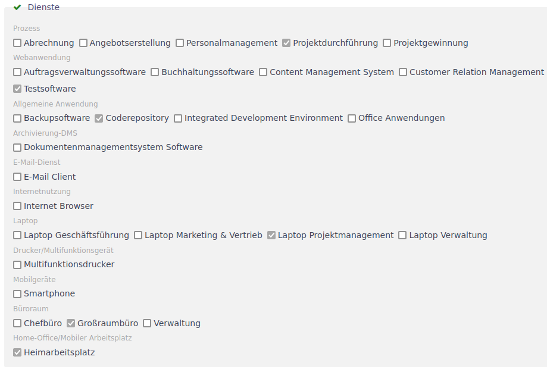
Zu sehen sind die bereitgestellten Dienste (Objekte einer Objektklasse), die mit dem Objekt in der Konfiguration verknüpft werden können.
Objektmodule
Objektmodule sind die Werkzeuge im xmera Omnia. Nicht in jedem Objekt werden alle Module benötigt. Damit die Anwendung nicht zu unübersichtlich wird, können die Module zu jedem Objekt ein und ausgeschaltet werden.
Ein Beispiel ist im folgenden Bild zu sehen:
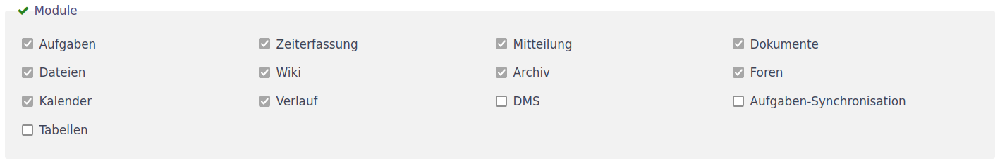
Die aktivierten Module werden als Reiter in den Objektmasken angezeigt. Für die oben dargestellte Auswahl ergibt sich dann folgende Menüleiste:
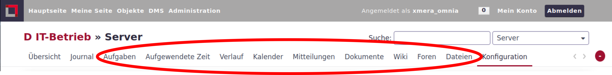
| Wird ein Modul deaktiviert, in dem bereits Daten erfasst wurden, so werden die bereits erfassten Daten nicht gelöscht. Wird das Modul wieder aktiviert, so werden diese Daten wieder angezeigt. |
Mitglieder verwalten
Über den Reiter Mitglieder der Konfigurationsseite eines Objekts lassen sich Mitgliederrollen verwalten.

In der Liste sind, siehe Punkt ➊, alle Mitglieder und Gruppen mit ihren Rollen gelistet. Über den Button ➋ können neue Mitglieder mit aufgenommen werden und mit der Bearbeitung bzw. dem Löschen ➌ lassen sich die Einträge verändern oder entfernen.
Nutzern mit Administrationsrechten wird der Button Administration ➍ angeboten. Über diesen Button kommt der Administrator direkt in die Benutzerverwaltung.
| Aus einem überlagerten Objekt geerbte Mitglieder und deren Rollen können nicht gelöscht werden. Es können nur weitere Mitglieder oder Rollen hinzugefügt werden und nur diese Einträge lassen sich auch wieder löschen. |
Sollen neue Mitglieder hinzugefügt werden, wird ein weiteres Fenster mit den möglichen Mitgliedern und Gruppen sowie die Liste der möglichen Rollen angezeigt.
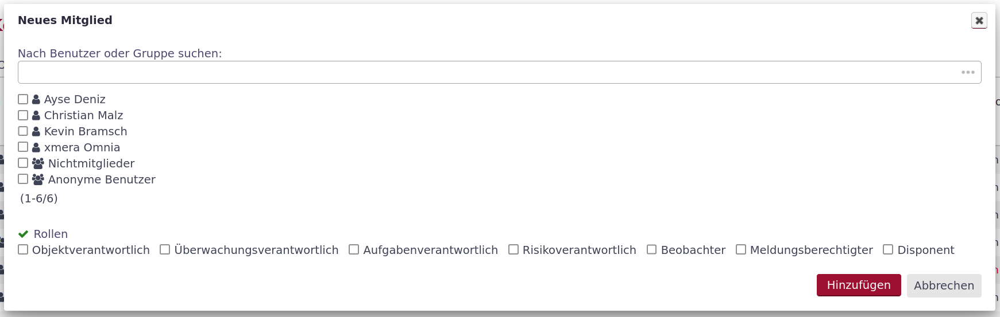
Für die Aufnahme von Mitgliedern sind die Benutzer bzw. die Gruppen auszuwählen, die aufgenommen werden sollen. Weiter ist die Rolle bzw. sind die Rollen auszuwählen, die Mitglieder in diesem Objekt haben sollen. Nur in der Kombination aus Benutzer/Gruppe mit der/den Rolle(n) können neue Mitglieder durch Klicken des Buttons Hinzufügen aufgenommen werden.
Sollen Rollen eines Mitglieds oder einer Gruppe verändert werden, so erfogt das über den Button Bearbeiten.
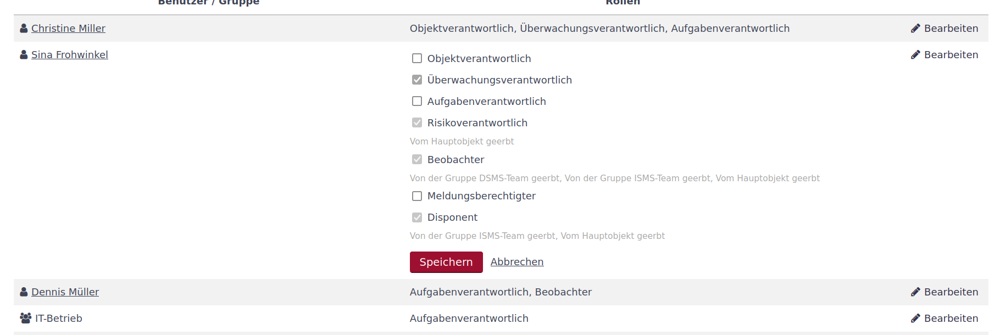
Es wird der Listeintrag des ausgewählten Mitarbeiters aufgeklappt und durch An- oder Abwahl können die Rollen verändert werden. Rollen, die ein Mitglied von einer Gruppe oder dem vorgelagerten Objekt geerbt hat, können nicht verädert werden. Dieses ist in der Maske gekennzeichnet. Werden alle Rollen eines Mitglieds gelöscht, wird dieses Mitglied gelöscht.
Objektjournal
Das Journal eines Objekts zeigt die Aktivitäten von ausgewählten Modulen chronologisch an. Beim Standardaufruf werden die letzten 10 Tage bis zum aktuellen Datum angezeigt. Das Datum kann durch den Nutzer geändert werden.
| Die Anzahl der Tage, im Standard 10, die chronologisch dargestellt werden, kann in der Systemkonfiguration angepasst werden. |
In der Sidebar besteht die Möglichkeit die Aktivitäten zu filtern. So können die Aktivitäten durch Auswahl der Module, die betrachtet werden sollen, eingeschränkt werden. Weiter können die angezeigten Aktivitäten auf eine Person eingegrenzt werden. Änderungen werden mit dem Button Anwenden übernommen. Die Liste der Aktivitäten wird danach neu aufgebaut.
Die Aktivitäten sind als Links dargestellt, so dass direkt zu den Änderungen gesprungen werden kann.